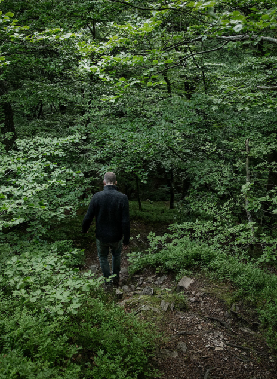
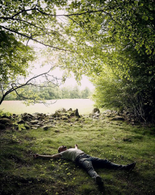

Convergence
of Zen meditation,
nature & creativity
The majesty of the natural world has always been integral to Sebastian Mullaert’s music.
His approach to art, as well as to life, is centered around meditating on nature’s primordial cycles and forces.



Based on nature breath